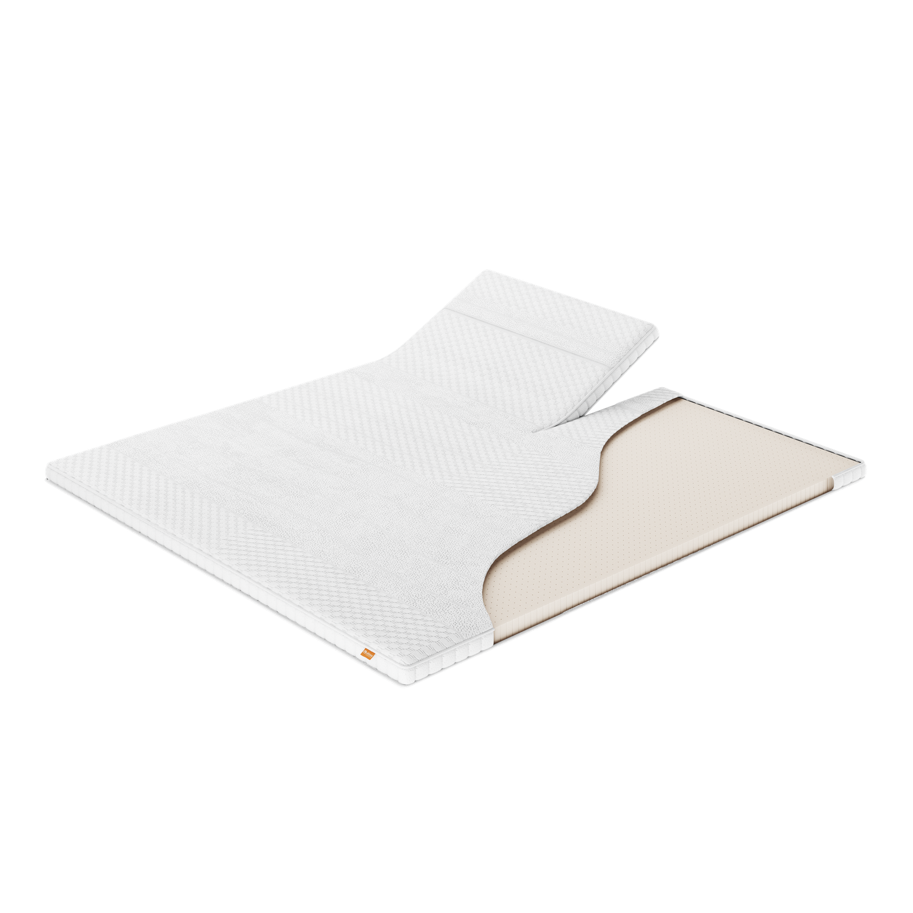
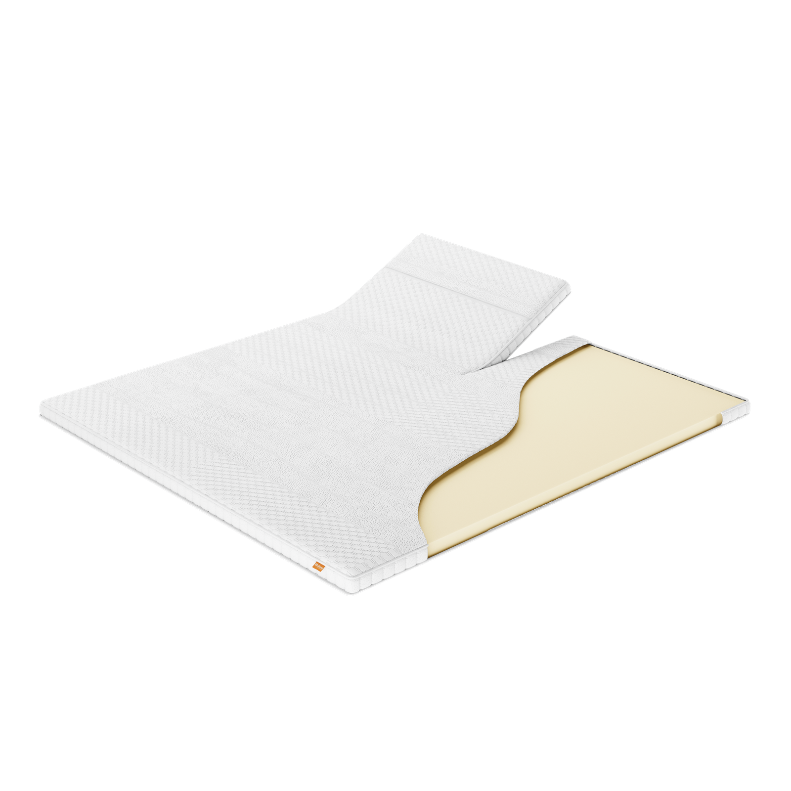
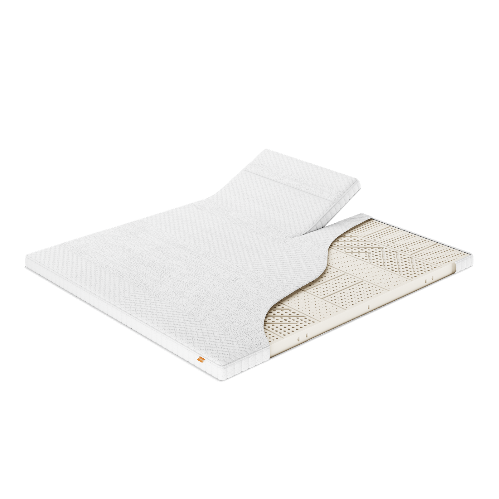

Topmatrassen — CumLaude
CumLaude-topmatras: één basis, vijf comfortlagen.
Alle vijf CumLaude-topmatrasuitvoeringen delen dezelfde hoes met opstaande borderrand en vulopties — het verschil zit in de comfortlaag. Ontdek welke uitvoering bij jou past.
01 — EF-contour
Energyfoam contour, een toegankelijke instapoptie.
De EF-contour-uitvoering heeft een comfortlaag van Energyfoam contourschuim — dezelfde toegankelijke schuimsoort als bij Initio PE10, nu met een contourvorm voor gerichte drukverdeling. De hoes heeft een opstaande borderrand en is te combineren met een vulling naar keuze.
- Comfortlaag van Energyfoam contourschuim
- Hoes met opstaande borderrand
- Vulling naar keuze: 3D mesh (Climate) of scheerwol (Natura)
- Kerndikte 5 cm, totale dikte ca. 9 cm
- Optioneel met split, voor verstelbare bedden
- Optioneel met uitgebreide schouderzone (Elastica)
Goed om te weten: Energyfoam contour geeft een soepele, nauwkeurig aanpassende ondersteuning — vergelijkbaar met de Energyfoam-laag van Initio PE10.
02 — Pulse latex
Pulse latex, een veerkrachtige middenoptie.
De Pulse latex-uitvoering combineert veerkracht met een fijnere drukverdeling dan EF-contour. De hoes heeft een opstaande borderrand en is te combineren met een vulling naar keuze.
- Comfortlaag van Pulse latex
- Hoes met opstaande borderrand
- Vulling naar keuze: 3D mesh (Climate) of scheerwol (Natura)
- Kerndikte 5 cm, totale dikte ca. 9 cm
- Optioneel met split, voor verstelbare bedden
- Optioneel met uitgebreide schouderzone (Elastica)
Goed om te weten: twijfel je tussen de varianten? Vraag je dealer naar een proefligging om het gevoel van Pulse latex te ervaren.
03 — Talalay latex
Talalay latex, luchtig geklopt voor extra veerkracht.
Talalay is een bekende, luchtig geklopte manier van latex verwerken, wat deze uitvoering een open, ademende structuur geeft. De hoes heeft een opstaande borderrand en is te combineren met een vulling naar keuze.
- Comfortlaag van Talalay-latex
- Hoes met opstaande borderrand
- Vulling naar keuze: 3D mesh (Climate) of scheerwol (Natura)
- Kerndikte 5 cm, totale dikte ca. 9 cm
- Optioneel met split, voor verstelbare bedden
- Optioneel met uitgebreide schouderzone (Elastica)
Goed om te weten: Talalay-latex staat bekend om zijn luchtige, open structuur — vraag je dealer naar het verschil met de andere CumLaude-uitvoeringen.

Talalay latex
Visco04 — Visco
Traagschuim (Visco), drukverlagend en lichaamsvolgend.
De Visco-uitvoering heeft een comfortlaag van traagschuim: het materiaal past zich langzaam aan je lichaamscontouren aan en veert minder snel terug, voor een drukverlagende ligsensatie. De hoes heeft een opstaande borderrand en is te combineren met een vulling naar keuze.
- Comfortlaag van traagschuim (Visco)
- Hoes met opstaande borderrand
- Vulling naar keuze: 3D mesh (Climate) of scheerwol (Natura)
- Kerndikte 5 cm, totale dikte ca. 9 cm
- Optioneel met split, voor verstelbare bedden
- Optioneel met uitgebreide schouderzone (Elastica)
Goed om te weten: traagschuim reageert op lichaamswarmte — deze topmatras voelt de eerste minuten steviger aan en wordt daarna geleidelijk zachter.
05 — 100% natuurlatex
100% natuurlatex, dikker en zonaal opgebouwd.
De 100% natuurlatex-uitvoering is de meest uitgesproken variant binnen de CumLaude-topmatrascollectie: dikker dan de andere vullingen en zonaal opgebouwd in 7 zones. Natuurlatex is van nature flexibel en veerkrachtig, en vormt zich nauwkeurig naar het lichaam.
- Comfortlaag van 100% natuurlatex
- 7 zones voor gerichte ondersteuning
- Hoes met opstaande borderrand
- Vulling naar keuze: 3D mesh (Climate) of scheerwol (Natura)
- Kerndikte 7 cm, totale dikte ca. 11 cm
- Optioneel met split, voor verstelbare bedden
- Optioneel met uitgebreide schouderzone (Elastica)
Goed om te weten: twijfel je tussen de varianten? De 100% natuurlatex-uitvoering is dikker en zonaal opgebouwd, en onderscheidt zich door een flexibele, veerkrachtige ligsensatie die zich nauwkeurig naar het lichaam vormt.

100% natuurlatexCombineer je CumLaude met de rest van de collectie
Bekijk ook onze andere topmatrascollecties, boxsprings, matrassen, gestoffeerde ledikanten en kussens.
Bekijk alle topmatrassen